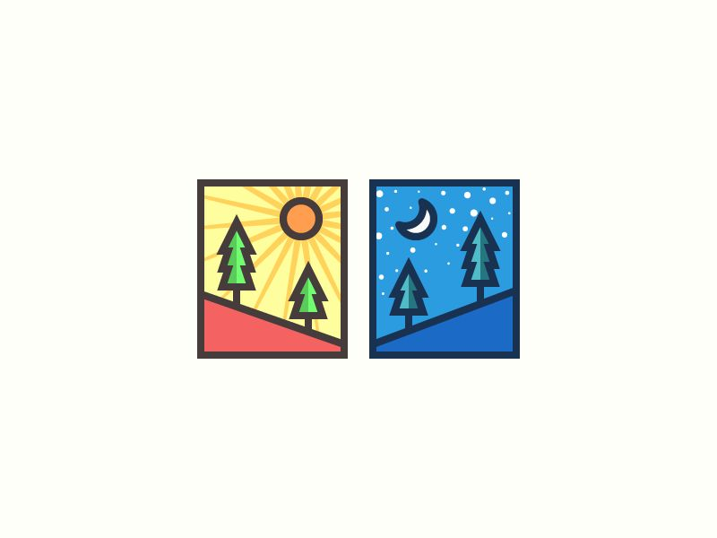

Dia y noche
El ciclo de la vida
"No es tanto la noche para que duerman los ignorantes cuanto para que velen los sabios. Y si el día ejecuta, la noche previene."

"No es tanto la noche para que duerman los ignorantes cuanto para que velen los sabios. Y si el día ejecuta, la noche previene."
